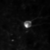
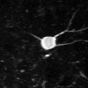

<script src="https://cdn.jsdelivr.net/npm/chart.js@2.8.0"></script>
<script src="https://assets.crowd.aws/crowd-html-elements.js"></script>
<link href="https://fonts.googleapis.com/icon?family=Material+Icons" rel="stylesheet">


<style>
	body {
		padding-left: 20px;
		margin-bottom: 20px;
    max-width: 1380px;
    margin: auto;
	}
	#outer-container {
	    display: flex;
      flex-wrap: wrap;
	    justify-content: space-around;
	    max-width: 650px;
      min-width: 600px;
	    /* margin-left: 100px; */
	}
  .roi-overlay {
    position: relative;
    /* left: 50;
    top: 50; */
    left: 0;
    top: 0;
    opacity: 1.0;
    z-index: 100;
  }
  #roi-mask {
    opacity: 0.5;
  }
  #roi-outline {
    opacity: 1.0;
  }
  .underlay {
    position: absolute;
    /* left: 50;
    top: 50; */
  }
  #myChart {
    /* position: relative; */
    top: 0;
  }
  .container {
    height: 100;
    margin-bottom: 20;
  }
  .image-label{
    width: 100;
    margin-bottom:10;
    font-size: small;
  }
  .toggle-controls{
    margin-bottom: 10;
  }
  #toggle-mask{
    position: absolute;
    right: 0;
    margin-right: 10;
  }
  .progress-bar {
  flex:10;
  position: relative;
  display:flex;
  flex-basis:100%;
  height:5px;
  transition:height 0.3s;
  background:rgba(0,0,0,0.5);
  cursor:ew-resize;
  margin-bottom:20;
  margin-left: 11;
  margin-right: 10;
}
#progress-fill {
  width:0%;
  background:#ffc600;
  flex:0;
  flex-basis:0%;
}
</style>


<crowd-form>
  <crowd-classifier
    name="roiLabel"
    categories="['cell', 'not cell']"
    header="Is the region of interest a cell or not a cell?"
  >
    <classification-target>

      <div class="toggle-controls">
        <button id="play-pause" type="button" onclick="togglePlayPause()"><i class="material-icons">play_circle_outline</i></button>
        <button id="toggle-mask" type="button" onclick="toggleMaskOutline()">Show Mask Outline</button>
      </div>
      <div id="outer-container">
      <span class="image-label">2p Recording</span>
      <span class="image-label">Average Projection</span>
      <span class="image-label">Max Projection</span>
      <span class="image-label">ROI Mask</span>
      </div>
      <div id="outer-container">
        <div class="container">
          <span class="underlay">
            <video id="roivid" width="100", height="100">
              <source src="../resources/exp_716956096_4hz_small.mp4" type="video/mp4">
            Your browser does not support the video tag.
            </video>
          </span>
          <span class="roi-overlay">
            
          </span>
        </div>
        <div class="container">
          <span class="underlay">
            
          </span>
          <span class="roi-overlay">
            
          </span>
        </div>
        <div class="container">
          <span class="underlay">
            
          </span>
          <span class="roi-overlay">
            
          </span>
        </div>
        <div class="container">
          <span class="roi-overlay">
            
          </span>
        </div>
        <div class="progress-bar">
          <div id="progress-fill"></div>
        </div>
        <canvas id="myChart" width="600" height="100"></canvas>
        <div id="video-instructions">
          <p>Click a point on the ROI trace to jump to that point in the video.<br>
          If the video is currently playing, it will continue playing at the selected time.<br>
          Use the button on the upper right to toggle between full mask overlay and outline.
        </div> 
      </div>
    </classification-target>
    
    <full-instructions header="Cell Detection Instructions">
        <p>Pick whether the region of interest is a cell or not.</p>
        <div>
           <p><strong>Example: </strong>I would like to return a pair of shoes</p>
           <p><strong>Intent: </strong>Return</p>
        </div>
    </full-instructions>

    <short-instructions>
        Pick whether the region of interest is a cell or not.
    </short-instructions>
  </crowd-classifier>
</crowd-form>

<script>
  // --- dummy data  --- //
  const randomData = [...Array(26)].map(() => Math.floor(Math.random() * 9));
  const makeRepeated = (arr, repeats) =>
    [].concat(...Array.from({ length: repeats }, () => arr));
  let range = n => [...Array(n).keys()]
  const fakeLabels = range(26)
  //-------------------//

  // Extend chart to have a vertical line on mouse hover
  Chart.defaults.LineWithLine = Chart.defaults.line;
  Chart.defaults.global.elements.point.radius = 1;
  Chart.controllers.LineWithLine = Chart.controllers.line.extend({
    draw: function(ease) {
        Chart.controllers.line.prototype.draw.call(this, ease);
        // Add vertical line that snaps to index
        if (this.chart.tooltip._active && this.chart.tooltip._active.length) {
          var activePoint = this.chart.tooltip._active[0],
              ctx = this.chart.ctx,
              x = activePoint.tooltipPosition().x,
              topY = this.chart.scales['y-axis-0'].top,
              bottomY = this.chart.scales['y-axis-0'].bottom;

          // draw line
          ctx.save();
          ctx.beginPath();
          ctx.moveTo(x, topY);
          ctx.lineTo(x, bottomY);
          ctx.lineWidth = 2;
          ctx.strokeStyle = '#07C';
          ctx.stroke();
          ctx.restore();
        }
    }
  });
  var chart = new Chart(myChart, {
      type: 'LineWithLine',
      data: {
          labels: fakeLabels,
          datasets: [{
              label: 'Trace',
              data: randomData,
              backgroundColor: 'rgba(255, 134, 0, 0.8)',
              borderColor: 'rgba(255, 134, 0, 0.3)',
              fill: false,
          }]
      },
      options: {
          elements: {
            line: {
              tension: 0.1,
              borderWidth: 1
            }
          },
          legend: {
            display: false
          },
          layout: {
            padding: {
              left: 0,
              right: 0
            }
          },
          scales: {
            yAxes: [{
              ticks: {
                display: false
              },
              gridLines: {
                drawTicks: false,
                display: false
                },
              offset: true,
              }],
            xAxes: [{
              gridLines: {
                display: false              
              },
              offset: true,
            }]
          },
          tooltips: {
            intersect: false,
            axis: 'x',
            mode: 'index',
            callbacks: {
              label: function(tooltipItem) {
                return tooltipItem.yLabel;
              }
            }
          }
      }
  });

  // Control video time with click event on chart (get nearest event by x axis)
  var vid = document.getElementById("roivid");
  document.getElementById('myChart').onclick = function(evt) {
    var activePoints = chart.getElementsAtEventForMode(
      evt, 'index', {intersect: false, axis: 'x'});
    if (activePoints[0]) {
      var chartData = activePoints[0]['_chart'].config.data;
      var idx = activePoints[0]['_index'];
      var time = chartData.labels[idx];
      vid.currentTime = time;
      }
  };

  var videoButton = document.getElementById('play-pause')
  function togglePlayPause() {
    if (vid.paused || vid.ended){
      videoButton.innerHTML = "<i class='material-icons'>play_circle_outline</i>"
    }
    else {
      videoButton.innerHTML = "<i class='material-icons'>pause_circle_outline</i>"
    }
  }

  vid.addEventListener('play', function() {
    togglePlayPause();
  }, false);

  vid.addEventListener('pause', function() {
    togglePlayPause();
  }, false);

  vid.addEventListener('ended', function() {
    togglePlayPause();
  }, false);

  vid.addEventListener("timeupdate", function() {
    updateProgress()
  }, false);

var progressFill = document.getElementById("progress-fill")
  function updateProgress() {
      var value = vid.currentTime / vid.duration * 100;
      progressFill.style.width = value.toString() + "%"
      progressFill.style.flexBasis = value.toString() + "%"
  }

  videoButton.addEventListener('click', function(e) {
    var isPlaying = vid.currentTime > 0 && !vid.paused && !vid.ended 
    && vid.readyState > 2;
    if (!isPlaying) {
      vid.play();
    } else {
      vid.pause();
    }
  });

  // Swap between masks and outlines
  function toggleMaskOutline() {
    var toggleMaskButton = document.getElementById('toggle-mask')
    if(toggleMaskButton.innerHTML === "Show Mask Outline"){
      toggleMaskButton.innerHTML = "Show Mask Overlay";
      roiElements = document.getElementsByClassName("roi-image");
      for (var i = 0; i < roiElements.length; i++) {
        roiElements[i].src = "../resources/roi_mask_outline.png";
        roiElements[i].id = "roi-outline"
      }
    }
    else {
      toggleMaskButton.innerHTML = "Show Mask Outline";
      roiElements = document.getElementsByClassName("roi-image");
      for (var i = 0; i < roiElements.length; i++) {
        roiElements[i].src = "../resources/roi_mask.png";
        roiElements[i].id = "roi-mask"
      }
    }
  }
  </script>